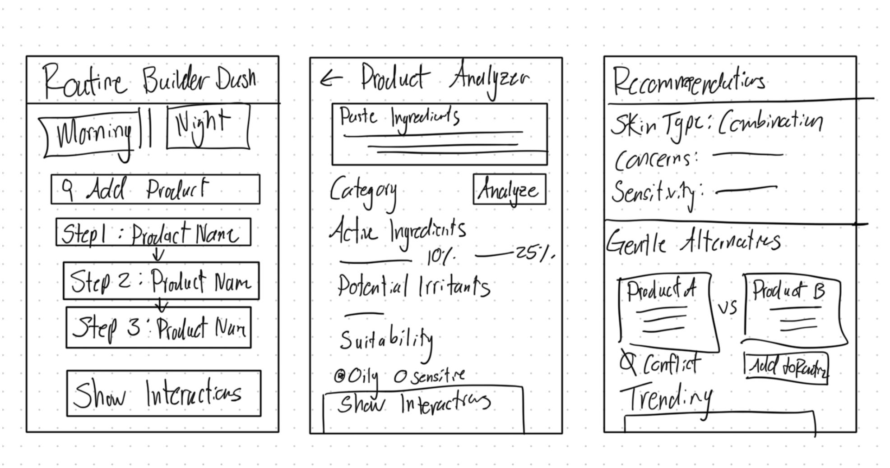
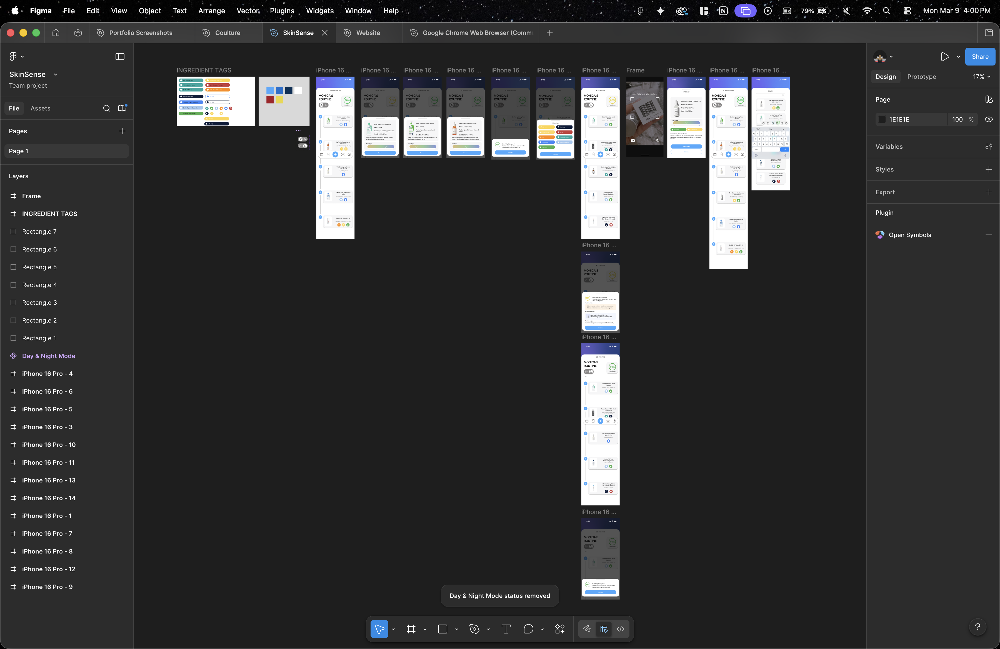

A semester-long UX empathy project — designing a personalized skincare routine checker that helps everyday users navigate complex ingredient lists and build safe, effective routines.
SkinSense was a semester-long project for INLS 382 at UNC Chapel Hill — a course focused on UX design through an empathy-first lens. The brief pushed us to find a real, frustrating problem in everyday life and design a solution from the ground up: problem definition, user research, requirements, sketches, wireframes, and a fully realized high-fidelity prototype.
I led the prototype design and brought the entire product to life in Figma — taking the team's research, requirements, and hand-drawn sketches and turning them into a polished, interactive app.
"Many people unintentionally combine skincare products with ingredients that don't work well together. Mixing incompatible ingredients can lead to irritation, breakouts, or worsened skin — even when each product is effective on its own."
Our research identified that the core frustration wasn't finding products — it was knowing whether the products you already owned were safe to use together. This broke down into three compounding pain points that affected beginners and enthusiasts alike.
Ingredient conflicts like Vitamin C + niacinamide or retinol + AHAs are common but invisible to most consumers, causing real irritation.
Users spend money on products only to discover through trial and error that combinations don't work — with no guidance on why.
Ingredient lists are long, technical, and written for chemists — not the average person trying to manage acne or hydration.
We defined two distinct user types to ground every design decision — a builder who wants to create a routine from scratch, and a researcher who wants to investigate a specific product before committing to it.
Developed a detailed problem statement grounded in real user frustration. Identified three core pain points through research: risk of skin damage, wasted time and money, and information overload from complex ingredient lists.
Defined 10 functional and non-functional requirements covering product input, ingredient database, compatibility checking, user profiles, routine building, recommendations, and privacy. Wrote two user stories with full acceptance criteria.
Sketched three key screens by hand: a Routine Builder Dashboard (morning/night toggle, add product flow), a Product Analyzer (paste ingredients, detect conflicts), and a Recommendations screen (skin type filters, gentle alternatives, trending products).
Translated hand-drawn sketches into low-fidelity wireframes covering all key flows — routine view, product detail, search, barcode scan, and compatibility result screens.
Led the full Figma prototype build — bringing every screen to life with a clean dark UI, color-coded compatibility scoring, barcode scanning flow, and a personalized routine dashboard. Created a cohesive visual system across 10+ screens.
The final prototype covered every key user flow: onboarding into a personalized routine, adding products manually or via barcode scan, viewing ingredient compatibility scores, and receiving safe alternative recommendations. Each screen was designed to feel approachable for beginners while being informative enough for experienced skincare users.


The entire project was grounded in the principle that good UX removes the burden of expertise from the user. SkinSense was built so that someone with zero skincare knowledge could make the same informed decisions as a dermatologist.
As part of the course requirements, we completed a full feasibility analysis — PERT timeline estimation, line-item cost breakdown, and technical requirements. The estimated project timeline came in at 19.9 weeks with a total development budget of approximately $190,000, covering personnel, cloud hosting, and software licensing.
This wasn't just a design exercise — it was scoped as a real product, which meant every design decision had to account for backend feasibility, data privacy compliance, and performance requirements.
SkinSense was my deepest end-to-end UX experience to date. It pushed me through every phase of the product design process — from empathy research and user story writing all the way through feasibility analysis and high-fidelity prototyping. I led the prototype build, which meant translating everyone's research, sketches, and requirements into a real, usable interface.
The biggest lesson: good UX starts with genuinely understanding why something is hard for someone — not assuming you already know. The empathy-first framework from INLS 382 is now how I approach every design problem.
See the full prototype and design files